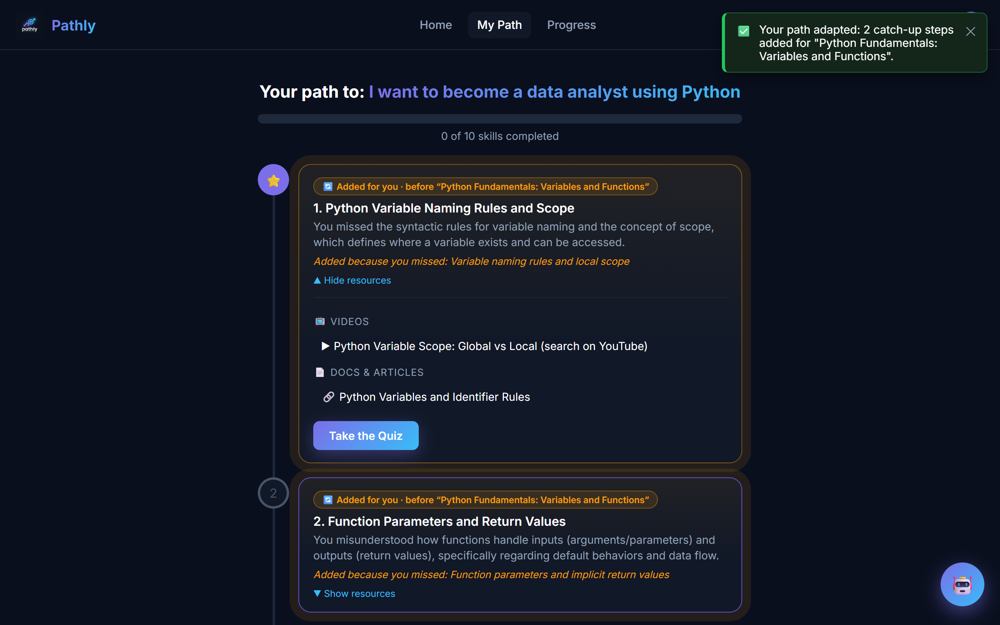
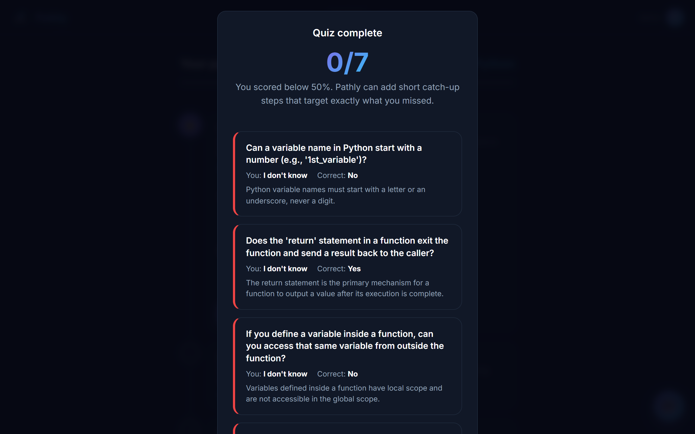
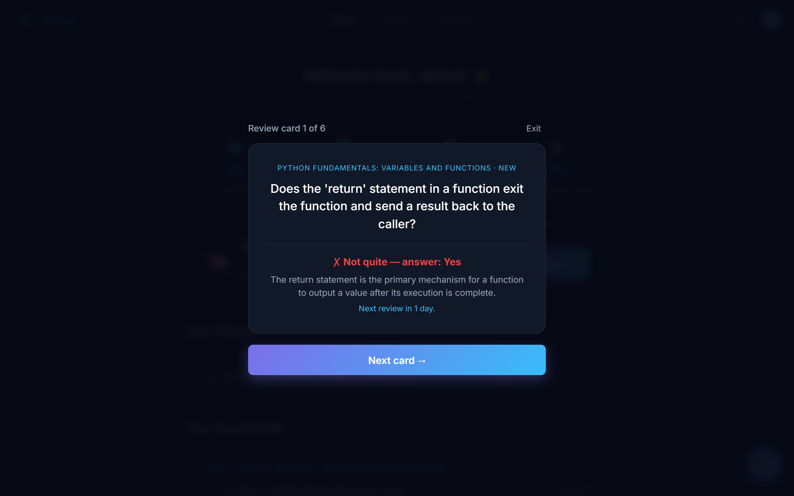
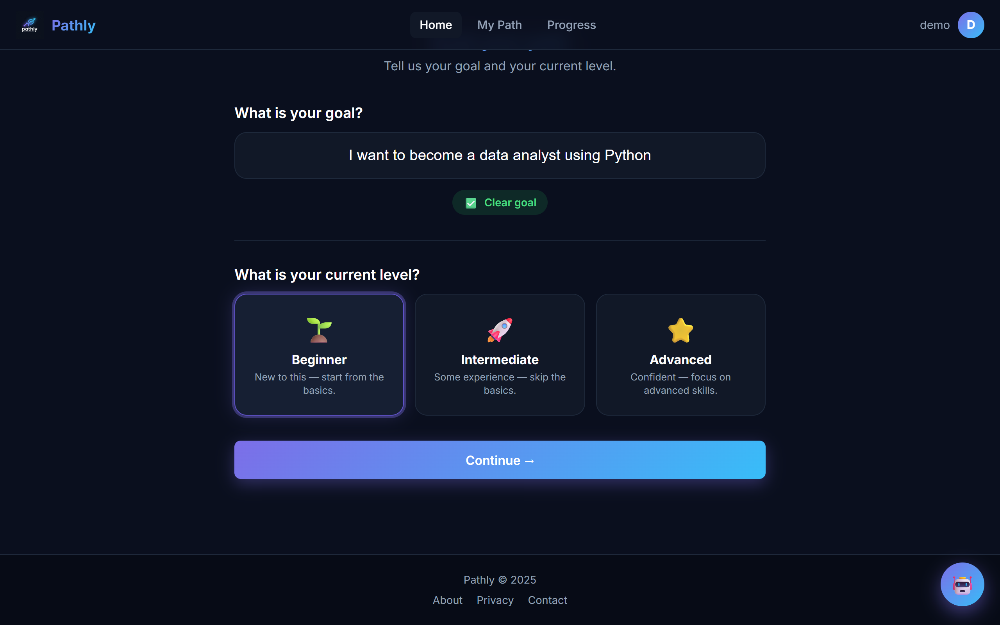
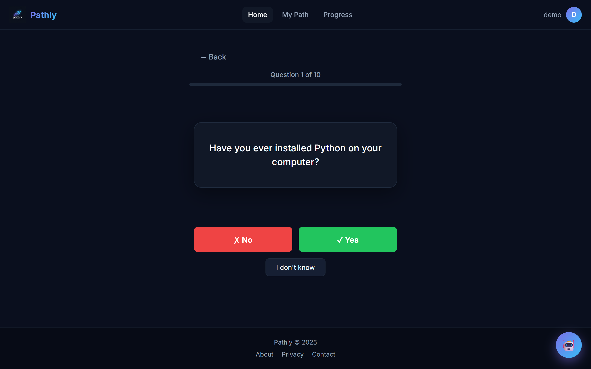
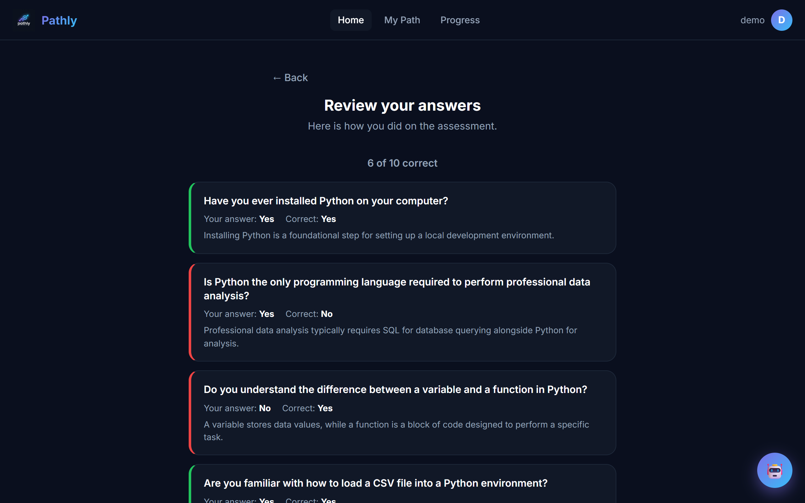
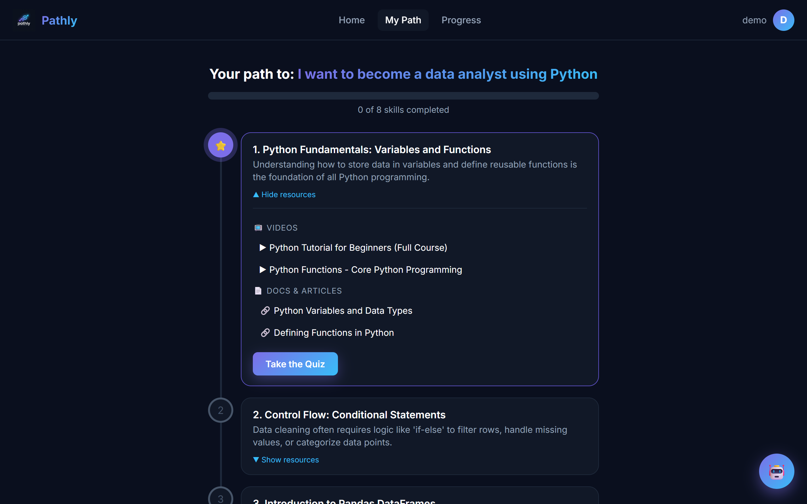
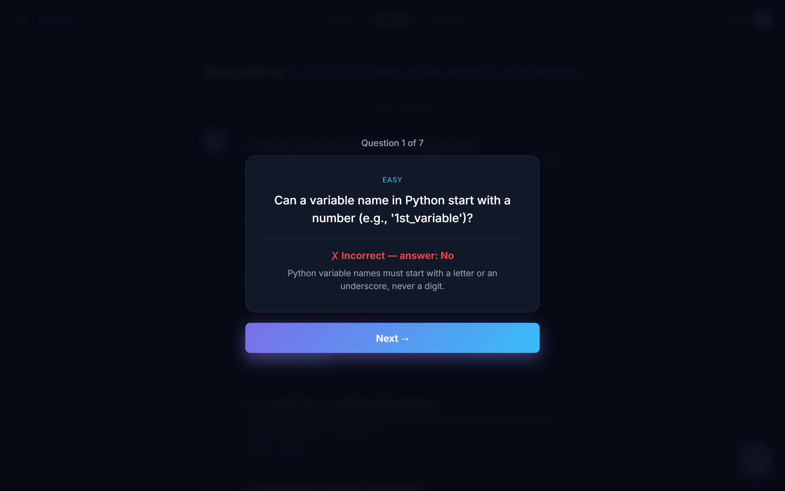
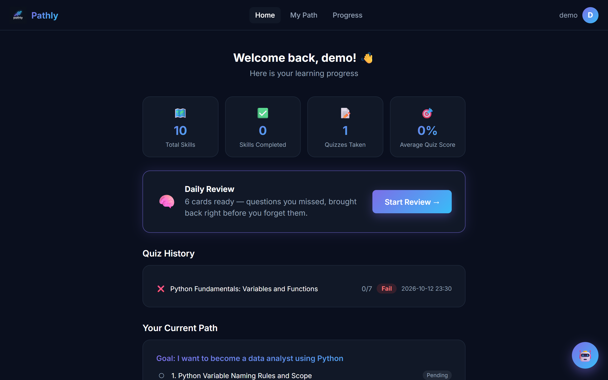
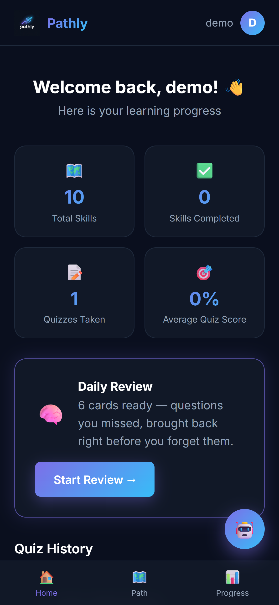

↗ Pathly
An AI tutor that changes the plan when you get something wrong.
Pathly turns a learning goal into a personalized skill path, quizzes you on every step, and rewrites the path around the exact questions you miss.
React 18VitePython · FastAPI
SQLiteGoogle GeminiPlaywright

After a failed quiz, two catch-up steps were inserted before the skill. Each one names the misconception it fixes.
The problem
A study plan is one prompt away. Following it is the hard part.
Ask any chatbot for "a roadmap to become a data analyst" and you get a decent list in seconds. The first version of Pathly did the same thing with a nicer interface, and it was easy to replace.
A plan only helps if it reacts to the learner. So I rebuilt Pathly around three things a single prompt can't do: remember what you got wrong, bring it back before you forget it, and only send you to resources that actually exist.
A chatbot plan
- Static list, same for every learner
- Forgets you between conversations
- No idea whether you understood a step
- Links are often broken or invented
Pathly
- Placement test sizes the path to your level and weekly hours
- Stores every quiz answer and reuses it
- A quiz checks each skill before you move on
- Every link is verified before you see it
Feature 1 · Adaptive path
Fail a quiz, and the path grows the steps you were missing

The learner fails the skill quiz. Each missed question is listed with an explanation.
One click on "Adapt My Path" and the path goes from 8 to 10 steps.
The backend loads the incorrect answers from the learner's latest quiz on that skill and asks Gemini to diagnose the misconceptions behind them, grouping related mistakes into one or two narrow catch-up steps. A step like "Variable naming rules and scope" is smaller than the skill it supports, so it isn't the same lesson again.
The steps are inserted directly before the failed skill and the later steps shift down. Each one stores the skill it supports and the gap it fixes, which the UI shows as an amber "Added for you" badge.
A cap of two catch-up steps per skill keeps a struggling learner's path from growing forever. After that, Pathly asks them to work through what's already there.
Feature 2 · Spaced repetition
Missed questions come back right before you'd forget them
Every question you get wrong becomes a review card. Cards follow a Leitner box schedule, and the Dashboard shows how many are due today.
BOX 01dnew miss
BOX 13dafter review
BOX 27dafter review
BOX 314dafter review
DONEMastered
Correct: move up one boxMiss: back to box 0, due tomorrow

Each answer reschedules the card and tells the learner when they'll see it again.
Feature 3 · Verified resources
Catching the links the AI made up
While testing, I checked the YouTube links Gemini suggested. Many of the video IDs pointed to videos that don't exist. A YouTube watch page returns 200 even for a fake ID, so a normal link check can't catch this.
1
Allow-listThe model may only cite trusted learning sites and official docs (Python, pandas, NumPy, MDN and others). The prompt and the validator share one list.
2
Existence checkVideos go through YouTube's oEmbed endpoint, which returns 404 for IDs that don't exist. Other pages get a HEAD request with a GET fallback.
3
Graceful fallbackAn invented video becomes a YouTube search for its title, so every step still has a working video.
4
No false alarmsOnly a definite 400/404/410 rejects a link. Timeouts and proxy TLS errors keep it, and all links are checked in parallel.
The full journey
From a sentence to a personalized path

Type a goal. The AI checks it's a real learning goal while you pick a level.

Ten placement questions, tailored to the level you chose.

An answer review explains every question before the path is built.

An ordered path sized to your level and weekly study hours, with videos and docs.

Each skill ends with a 7-question quiz and instant feedback.

The Dashboard brings it together: progress, quiz history and today's review.
How it works
The learning loop
Goal→
AI goal check→
Placement test→
Personalized path→
Skill quiz
Pass→
Next skill
Fail→
Missed questions
→
Catch-up steps inserted before the skill→
Retry the quiz
→
Review cards at 1, 3, 7 and 14 days
Frontend
React 18 + Vite
Screens for every step, plain CSS with no UI kit, an AI chat assistant in English and Arabic, and a mobile bottom nav.
Backend
FastAPI + SQLite
REST API with Pydantic validation and additive schema migrations. The adaptive-path and spaced-repetition logic live here.
AI
Google Gemini
Seven prompts: goal check, placement test, answer review, path, quiz and catch-up steps return strict JSON; the chat tutor replies in plain text.
Tooling
Playwright
A script walks the full journey in Edge and regenerates every screenshot on this page.
Responsive
Built for a quick review on the bus
A daily review only works if it's easy to open. On phones, Pathly switches to a bottom navigation bar and stacks the dashboard, so the review card is one tap from the home screen.

What's next
Roadmap
- Real sessions. Replace the username stored in the browser with signed tokens.
- "Prove it" checkpoints. Submit code or a written explanation and get rubric-based AI feedback.
- Calendar re-planning. Turn weekly study hours into dated milestones that shift when you fall behind.
- SDK upgrade. Move from
google-generativeai to the newer google-genai SDK.